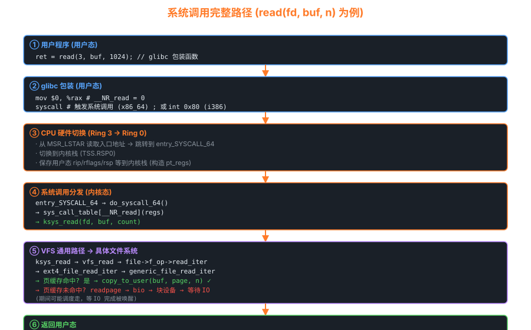

06系统调用 — 用户态与内核态的桥梁
系统调用是唯一合法的"用户态 → 内核态"通道。本章彻底搞清 read(fd, buf, n) 之后到底发生了什么。
6.1 完整路径全景

从 glibc 到块设备的 6 个阶段
6.2 x86 三代系统调用机制
| 机制 | 指令 | 引入 | 开销 | 触发方式 |
|---|---|---|---|---|
| 软中断 | int 0x80 | 286 | 慢 (~1000 cycles) | 查 IDT，类似中断 |
| SYSENTER | sysenter / sysexit | Pentium II | 快 (~100 cycles) | 从 MSR 直接跳转 |
| SYSCALL | syscall / sysret | x86_64 | 最快 | 从 MSR 直接跳转 |
x86_64 syscall 入口
; arch/x86/entry/entry_64.S — entry_SYSCALL_64 SYM_CODE_START(entry_SYSCALL_64) swapgs ; 切换 GSBASE 到内核 per-CPU 数据 movq %rsp, PER_CPU_VAR(cpu_tss_rw + TSS_sp2) movq PER_CPU_VAR(cpu_current_top_of_stack), %rsp ; 换内核栈 pushq $__USER_DS ; 构造 pt_regs (假装中断那样) pushq PER_CPU_VAR(cpu_tss_rw + TSS_sp2) pushq %r11 ; 用户态 RFLAGS pushq $__USER_CS pushq %rcx ; 用户态 RIP (syscall 把它存到 rcx) pushq %rax ; 系统调用号 PUSH_AND_CLEAR_REGS rax=$-ENOSYS ; 保存其他寄存器 movq %rsp, %rdi ; rdi = pt_regs * call do_syscall_64 ; ─── 进入 C 代码 ; ... 返回路径: 检查 signal/resched, swapgs, sysretq SYM_CODE_END(entry_SYSCALL_64)
分发：do_syscall_64
/* arch/x86/entry/common.c */ __visible noinstr void do_syscall_64(struct pt_regs *regs, int nr) { nr = syscall_enter_from_user_mode(regs, nr); if (likely(nr < NR_syscalls)) { nr = array_index_nospec(nr, NR_syscalls); // 关键: 通过函数指针表分发 regs->ax = sys_call_table[nr](regs); } syscall_exit_to_user_mode(regs); } /* sys_call_table 由 syscall_64.tbl 自动生成 */ extern const sys_call_ptr_t sys_call_table[NR_syscalls] = { [0] = __x64_sys_read, [1] = __x64_sys_write, [2] = __x64_sys_open, [3] = __x64_sys_close, [57] = __x64_sys_fork, [59] = __x64_sys_execve, [60] = __x64_sys_exit, /* ... 共 ~450 个 */ };
6.3 系统调用号是如何"生长"的
新加系统调用必须排在表尾，编号永不重用，这是 ABI 稳定的关键。
$ wc -l arch/x86/entry/syscalls/syscall_64.tbl 446 arch/x86/entry/syscalls/syscall_64.tbl $ tail -5 arch/x86/entry/syscalls/syscall_64.tbl 449 common futex_waitv sys_futex_waitv 450 common set_mempolicy_home_node sys_set_mempolicy_home_node 451 common cachestat sys_cachestat 452 common fchmodat2 sys_fchmodat2 453 common map_shadow_stack sys_map_shadow_stack
6.4 vDSO — 不进内核的"系统调用"
有些"系统调用"不需要切到内核态就能完成，比如 gettimeofday()。Linux 把一段内核代码映射到每个进程地址空间，称为 vDSO：
cat /proc/self/maps | grep vdso # 7ffd...000-7ffd...000 r-xp 00000000 00:00 0 [vdso] # gettimeofday() 直接调用 vDSO 里的代码 → 不切环 → 极快
内核把当前时间放在一段共享内存里，vDSO 函数直接读这段内存。
6.5 seccomp — 系统调用过滤器
容器、浏览器沙箱用 seccomp 限制进程能调用哪些 syscall。
/* 用 BPF 过滤 syscall */ struct sock_filter filter[] = { BPF_STMT(BPF_LD | BPF_W | BPF_ABS, offsetof(struct seccomp_data, nr)), BPF_JUMP(BPF_JMP | BPF_JEQ, __NR_read, 0, 1), BPF_STMT(BPF_RET, SECCOMP_RET_ALLOW), BPF_JUMP(BPF_JMP | BPF_JEQ, __NR_write, 0, 1), BPF_STMT(BPF_RET, SECCOMP_RET_ALLOW), BPF_STMT(BPF_RET, SECCOMP_RET_KILL), }; prctl(PR_SET_NO_NEW_PRIVS, 1); prctl(PR_SET_SECCOMP, SECCOMP_MODE_FILTER, &prog); // 此后调用 open() 等会被立刻 KILL
6.6 添加自定义系统调用 (实验)
# 1. 在 syscall_64.tbl 末尾加一行 454 common hello_kernel sys_hello_kernel # 2. 在 kernel/sys.c 加实现 SYSCALL_DEFINE1(hello_kernel, char __user *, name) { char buf[64]; if (strncpy_from_user(buf, name, 63) < 0) return -EFAULT; pr_info("Hello, %s! From kernel.\n", buf); return 0; } # 3. include/linux/syscalls.h 加声明 asmlinkage long sys_hello_kernel(const char __user *name); # 4. 重新编译内核 + 启动 QEMU # 5. 用户态调用 syscall(454, "world"); # dmesg | tail → Hello, world! From kernel.